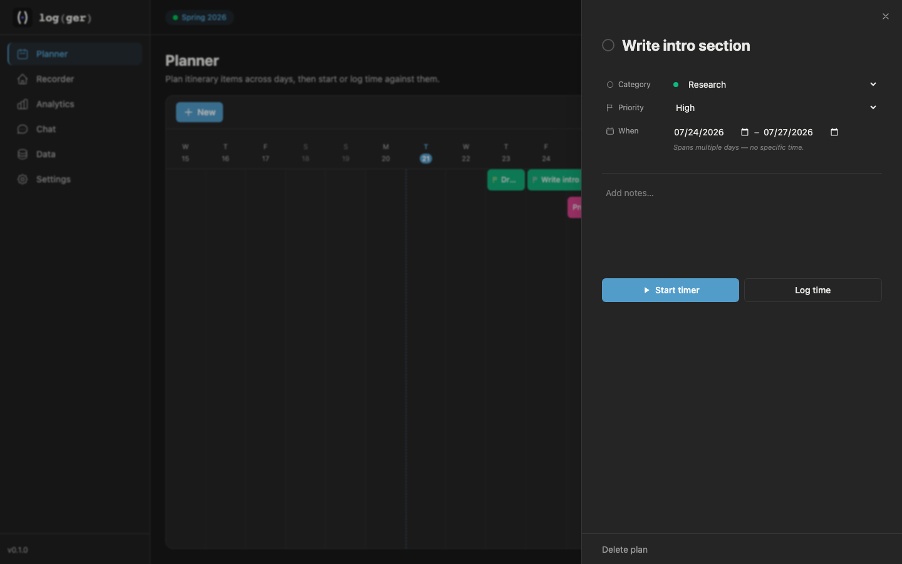
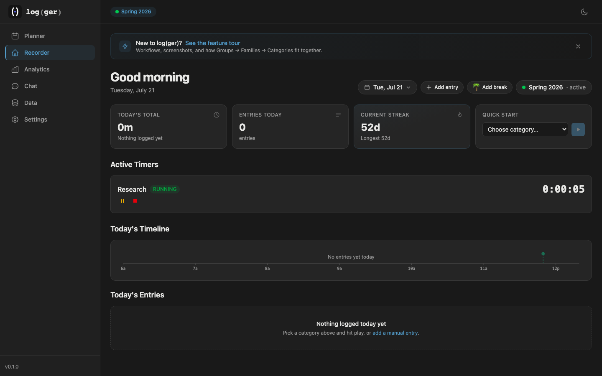
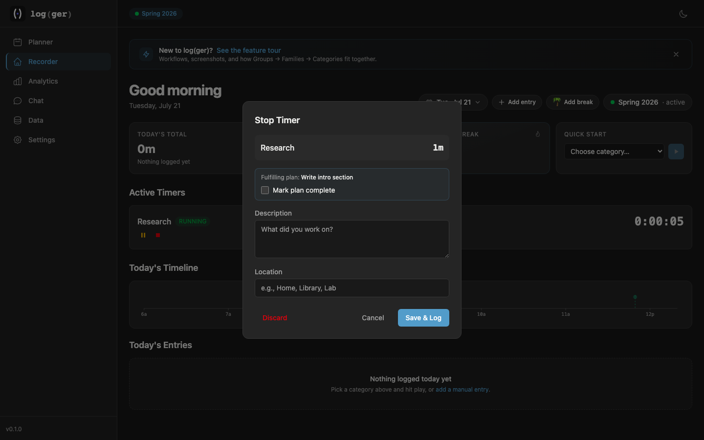
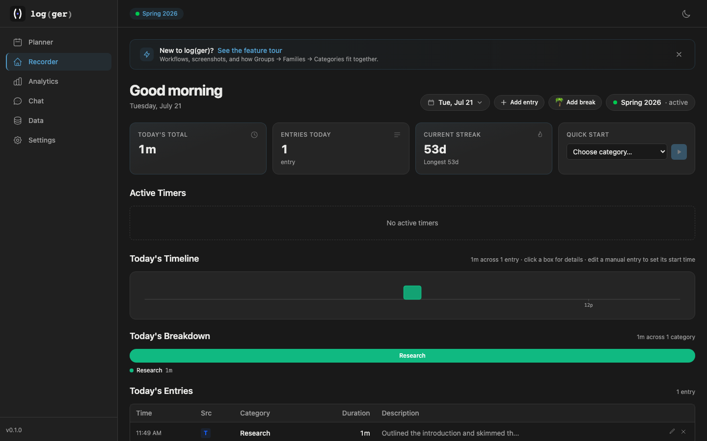
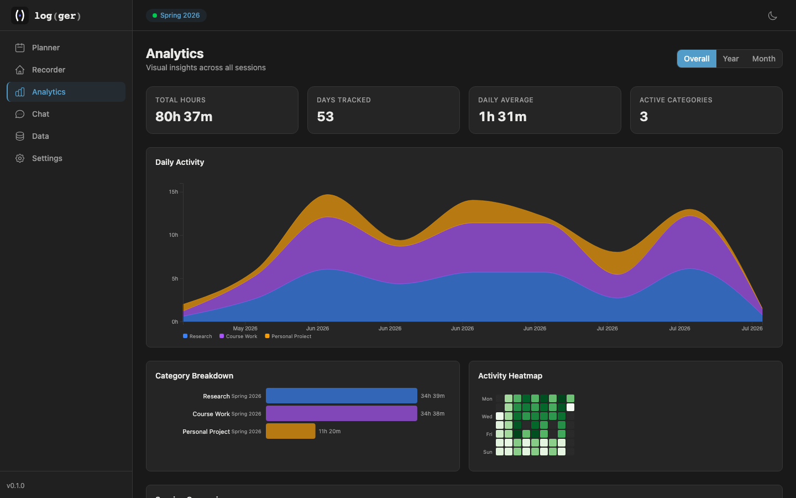
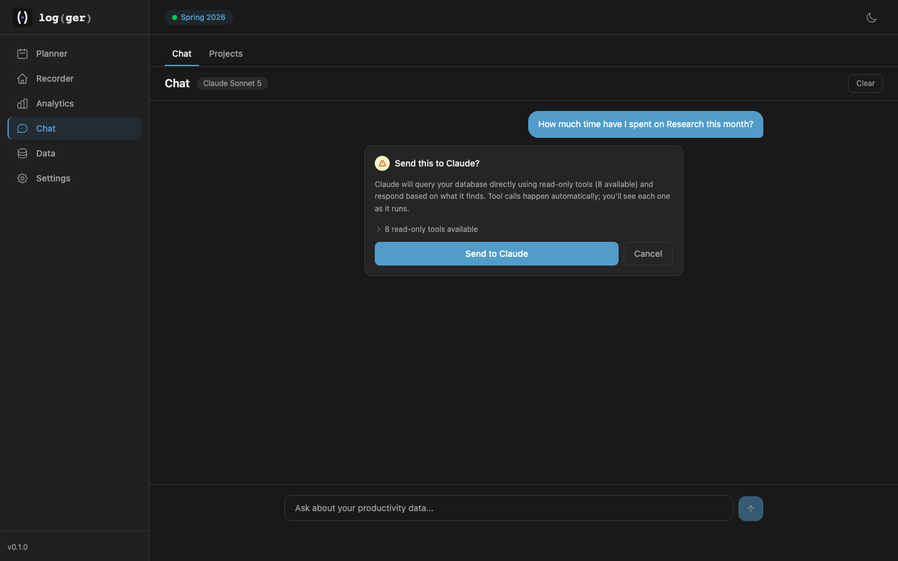
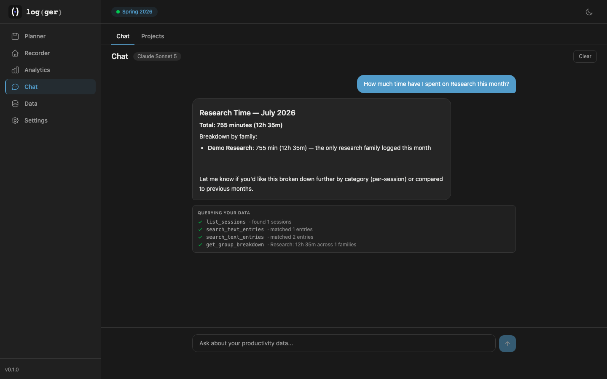

Walkthrough
Every screenshot and clip below is the real app, running against a seeded demo session — not redrawn mockups. This is exactly what plan → track → analyze → ask looks like end to end, including one real, live exchange with the chat.
Plan
It starts on the planner’s timeline — drag across the days you mean to work on something.
A drag across a few days opens a quick-create popover — title, category, done.

Click it to open the full panel — category, dates, and notes, all editable in place. Set a priority and it shows up as a small flag right on the timeline bar.
Track
When the day comes, start it right from the plan — no re-typing what you already decided.
The timer runs right inside the plan panel, linked back to it from the moment it starts — a real, live timer, pause and resume whenever.
Close the loop
The same timer shows up on the Recorder dashboard too — it’s one piece of state, not two apps pretending to sync.

Same timer, same second, on the dashboard — note the streak, already at 52 days from the seeded history.

Stopping it shows exactly which plan it’s closing out — completing the plan is still your call, not automatic.

Today’s total, the entry, and the streak all update together — one write, everywhere it matters.
Analyze
Eight weeks of seeded history, rolled up into the real dashboard — the same charts documented in Analyzing.

80h 37m across 53 days — the stacked chart, the category split, and a real activity heatmap, all from data that actually got logged.
Ask
One real exchange with the chat — not a staged answer. Every tool call it makes against your data is visible, and nothing runs before you approve it.

Asking “How much time have I spent on Research this month?” stops here first — eight read-only tools, nothing runs until you approve.

The real answer — grounded in the actual numbers, with every query it ran shown right below.
That’s the whole loop. Run it locally to try it on your own time.